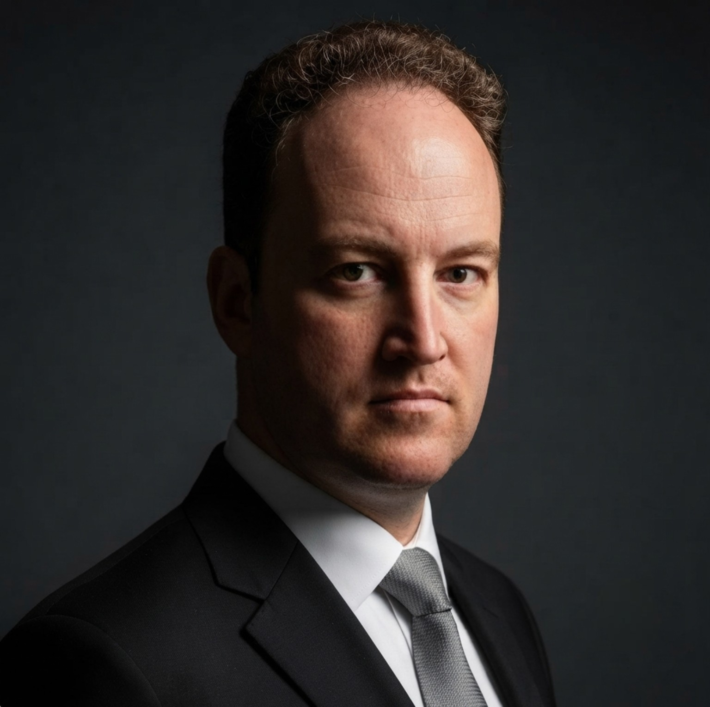
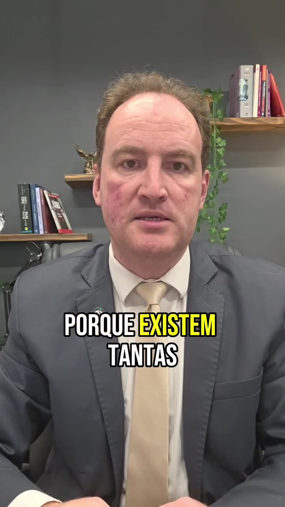
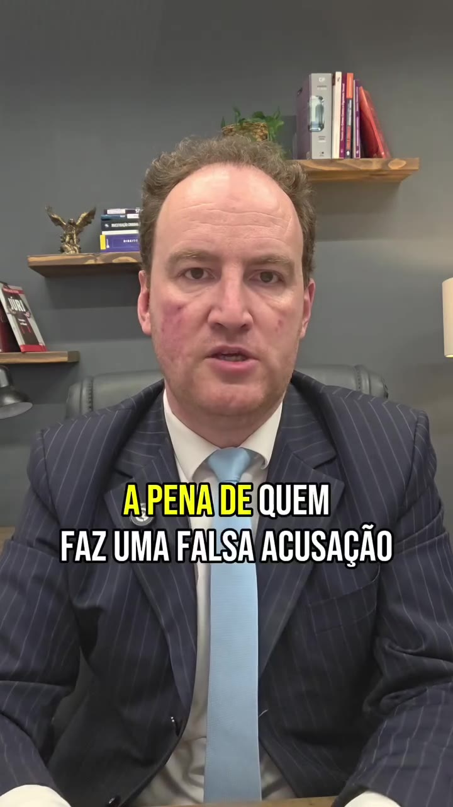
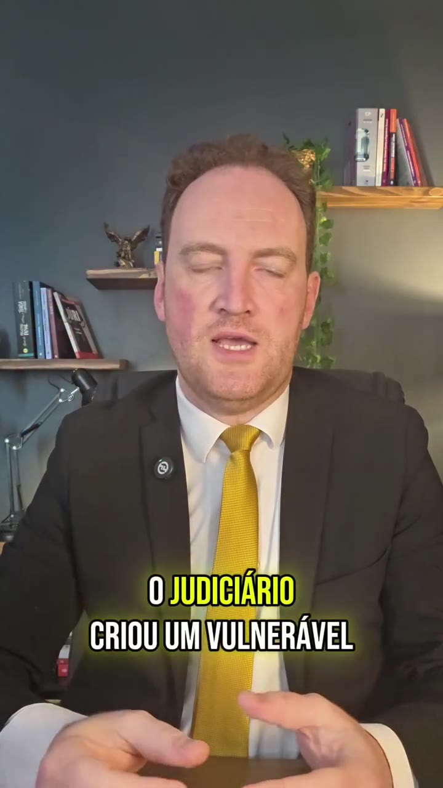
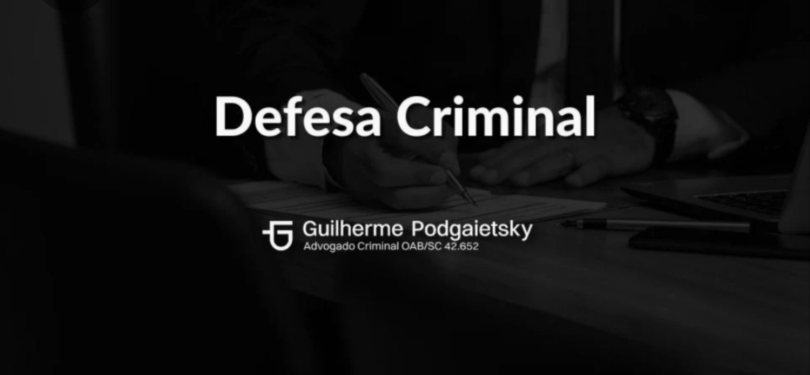
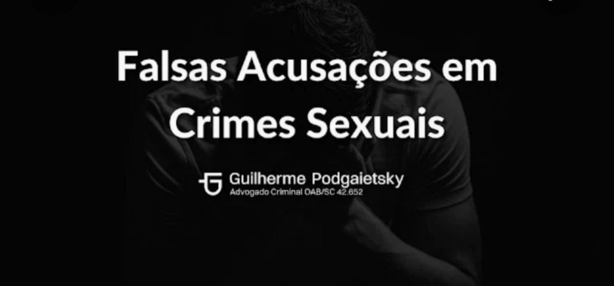
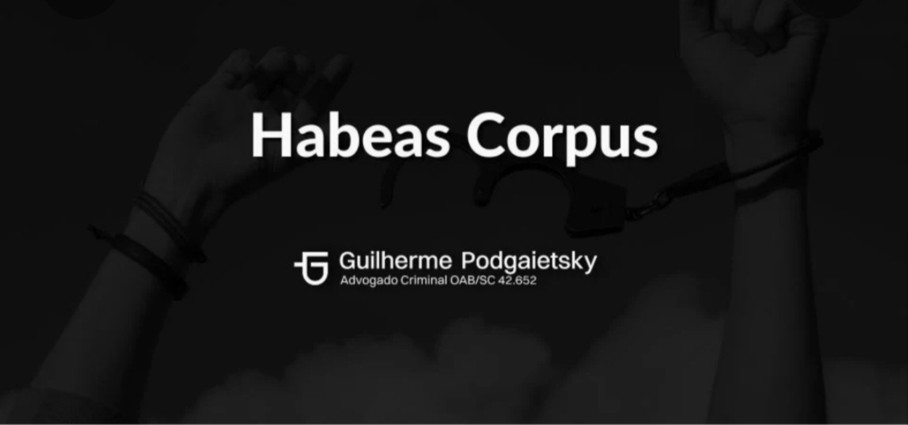

Foi intimado para depor?
Receba orientação antes de comparecer à delegacia ou ao Ministério Público.
Falar sobre a intimaçãoAtendimento criminal 24h
Atuação focada na defesa em crimes sexuais, desde a investigação até o processo criminal, em Rio do Sul e em todo o Brasil.
Orientação no momento certo
O primeiro passo é compreender a situação com calma e preservar seus direitos.
Receba orientação antes de comparecer à delegacia ou ao Ministério Público.
Falar sobre a intimaçãoPreserve provas e evite confrontos antes de receber orientação individual.
Falar sobre a acusaçãoAs primeiras horas são importantes para examinar a prisão e as medidas cabíveis.
Pedir atendimento urgenteEntenda a fase processual, os próximos atos e as possibilidades de defesa.
Analisar meu processoAtendimento direto e reservado
Explique apenas o necessário para iniciarmos.
O contexto e os documentos são examinados.
Os caminhos possíveis são apresentados.
Orientação em cada etapa do procedimento.
Sua conversa é protegida pelo sigilo profissional.
Em situações urgentes, fale diretamente com o advogado.
Online ou presencial
Escolha a modalidade e prossiga para uma conversa com horário reservado.
Sua conversa é confidencial
Solicite o horário pelo WhatsApp.
Solicitar horárioConfirme pelo WhatsApp.

Experiência e preparação
Guilherme Podgaietsky, OAB/SC 42.652, atua há mais de 11 anos na advocacia criminal, com atenção especial à defesa em acusações relacionadas a crimes contra a dignidade sexual.
O trabalho parte da análise cuidadosa da prova, da escuta sem julgamentos e de uma estratégia compatível com cada caso.
Conteúdo em vídeo
Informações diretas para compreender temas sensíveis.



Defesa criminal completa
A estratégia considera a fase do caso, as provas e os riscos concretos.



Atuação especializada
Selecione um tema para compreender como a defesa pode atuar.
Orientação inicial
Informe apenas nome e WhatsApp.
Abrimos o WhatsApp para concluir.
Informação objetiva
Evite discutir o caso, preserve documentos e procure orientação antes de prestar declarações.
Não confronte o acusador. Preserve provas lícitas e busque análise individual.
É prudente obter orientação e, conforme o caso, ser acompanhado por advogado.
Existem hipóteses de prisão cautelar, mas cada caso exige análise concreta.
Ela pode ter especial relevância, mas deve ser examinada com o conjunto da prova.
Em muitos casos há recursos cabíveis, sujeitos a requisitos e prazos.
Sim. O atendimento pode ser realizado online para todo o Brasil.
Conteúdo jurídico
Conteúdos informativos sobre defesa criminal, provas e investigação.
Cuidados iniciais antes de comparecer.
Pedir orientaçãoCuidados com mensagens e arquivos relevantes.
Pedir orientaçãoFases iniciais, próximos atos e direitos envolvidos.
Pedir orientaçãoAtendimento confidencial
Converse diretamente e com sigilo.
Falar agora no WhatsApp